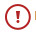
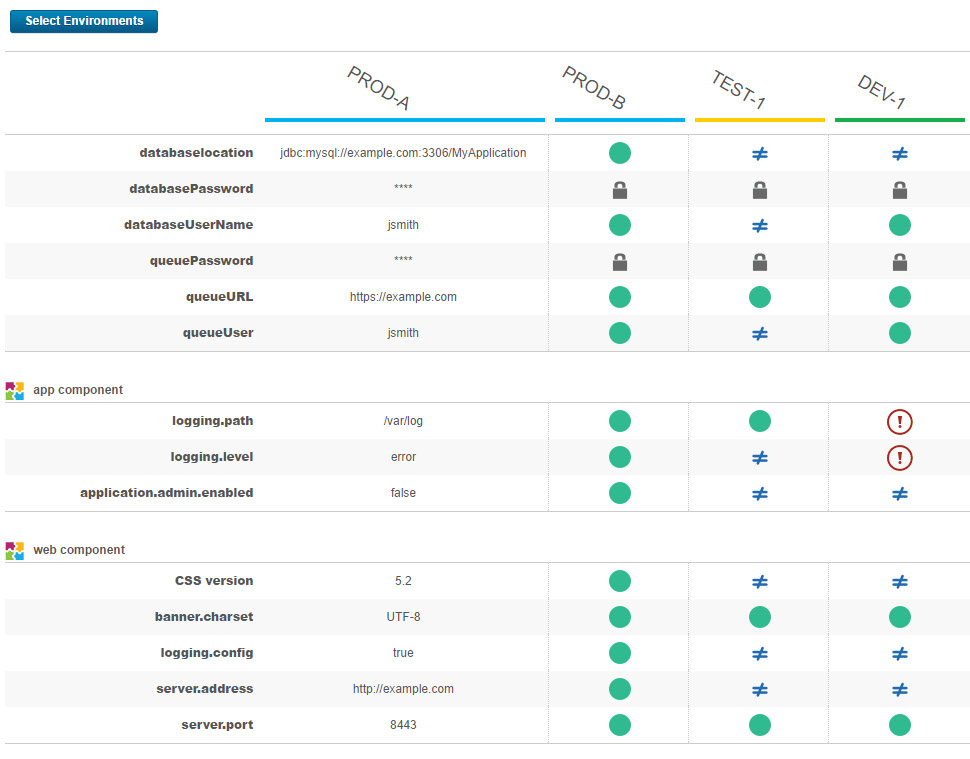

Comparing environments
You can compare two environments to see differences in their inventories or property values.
Comparing environment inventories
Comparing two environment inventories shows the differences in component versions between two environments. It also shows the differences in files and properties.
Procedure
Comparing properties
You can run a detailed comparison of properties between environments. You use one environment as a reference point, select one or more other environments, and the server shows the differences in properties on the other environments.
Procedure
- From the Deploy dashboard, click Applications, and then select an application.
- Click Compare Environments.
- In the Select Environments window, select a reference environment and then select one or more other environments to compare with the reference environment.
Results
- A green dot indicates that the property has the same value as the reference environment.
- A not equals sign indicates that the property has a different value than the reference environment.
- An empty circle indicates that the property does not exist on the environment.
- An exclamation point

indicates that the property is required, but it does not have a value on that environment. - A lock indicates that the property is secure. The server does not compare secure properties.

You can also export the results of the comparison to a CSV file by clicking
Download. The output file escapes values that start with Excel function
characters such as =, +, -, and
@ by prepending an apostrophe. Property values that are longer than 4,000
characters are truncated to 4,000 characters in the output.